Signal
Contents
Signal#
signal_simulate()#
- signal_simulate(duration=10, sampling_rate=1000, frequency=1, amplitude=0.5, noise=0, silent=False)[source]#
Simulate a continuous signal
- Parameters
duration (float) – Desired length of duration (s).
sampling_rate (int) – The desired sampling rate (in Hz, i.e., samples/second).
frequency (float or list) – Oscillatory frequency of the signal (in Hz, i.e., oscillations per second).
amplitude (float or list) – Amplitude of the oscillations.
noise (float) – Noise level (amplitude of the laplace noise).
silent (bool) – If
False(default), might print warnings if impossible frequencies are queried.
- Returns
array – The simulated signal.
Examples
In [1]: import pandas as pd In [2]: import neurokit2 as nk In [3]: pd.DataFrame({ ...: "1Hz": nk.signal_simulate(duration=5, frequency=1), ...: "2Hz": nk.signal_simulate(duration=5, frequency=2), ...: "Multi": nk.signal_simulate(duration=5, frequency=[0.5, 3], amplitude=[0.5, 0.2]) ...: }).plot() ...: Out[3]: <AxesSubplot:>
{kind=link}
Preprocessing#
signal_filter()#
- signal_filter(signal, sampling_rate=1000, lowcut=None, highcut=None, method='butterworth', order=2, window_size='default', powerline=50, show=False)[source]#
Filter a signal using “butterworth”, “fir” or “savgol” filters
Apply a lowpass (if “highcut” frequency is provided), highpass (if “lowcut” frequency is provided) or bandpass (if both are provided) filter to the signal.
- Parameters
signal (Union[list, np.array, pd.Series]) – The signal (i.e., a time series) in the form of a vector of values. or
"bandstop".sampling_rate (int) – The sampling frequency of the signal (in Hz, i.e., samples/second).
lowcut (float) – Lower cutoff frequency in Hz. The default is
None.highcut (float) – Upper cutoff frequency in Hz. The default is
None.method (str) – Can be one of
"butterworth","fir","bessel"or"savgol". Note that for Butterworth, the function uses the SOS method fromscipy.signal.sosfiltfilt(), recommended for general purpose filtering. One can also specify"butterworth_ba"for a more traditional and legacy method (often implemented in other software).order (int) – Only used if
methodis"butterworth"or"savgol". Order of the filter (default is 2).window_size (int) – Only used if
methodis"savgol". The length of the filter window (i.e. the number of coefficients). Must be an odd integer. If default, will be set to the sampling rate divided by 10 (101 if the sampling rate is 1000 Hz).powerline (int) – Only used if
methodis"powerline". The powerline frequency (normally 50 Hz or 60Hz).show (bool) – If
True, plot the filtered signal as an overlay of the original.
See also
- Returns
array – Vector containing the filtered signal.
Examples
In [1]: import numpy as np In [2]: import pandas as pd In [3]: import neurokit2 as nk In [4]: signal = nk.signal_simulate(duration=10, frequency=0.5) # Low freq In [5]: signal += nk.signal_simulate(duration=10, frequency=5) # High freq # Visualize Lowpass Filtered Signal using Different Methods In [6]: fig1 = pd.DataFrame({"Raw": signal, ...: "Butter_2": nk.signal_filter(signal, highcut=3, method="butterworth", ...: order=2), ...: "Butter_2_BA": nk.signal_filter(signal, highcut=3, ...: method="butterworth_ba", order=2), ...: "Butter_5": nk.signal_filter(signal, highcut=3, method="butterworth", ...: order=5), ...: "Butter_5_BA": nk.signal_filter(signal, highcut=3, ...: method="butterworth_ba", order=5), ...: "Bessel_2": nk.signal_filter(signal, highcut=3, method="bessel", order=2), ...: "Bessel_5": nk.signal_filter(signal, highcut=3, method="bessel", order=5), ...: "FIR": nk.signal_filter(signal, highcut=3, method="fir")}).plot(subplots=True) ...:
# Visualize Highpass Filtered Signal using Different Methods In [7]: fig2 = pd.DataFrame({"Raw": signal, ...: "Butter_2": nk.signal_filter(signal, lowcut=2, method="butterworth", ...: order=2), ...: "Butter_2_ba": nk.signal_filter(signal, lowcut=2, ...: method="butterworth_ba", order=2), ...: "Butter_5": nk.signal_filter(signal, lowcut=2, method="butterworth", ...: order=5), ...: "Butter_5_BA": nk.signal_filter(signal, lowcut=2, ...: method="butterworth_ba", order=5), ...: "Bessel_2": nk.signal_filter(signal, lowcut=2, method="bessel", order=2), ...: "Bessel_5": nk.signal_filter(signal, lowcut=2, method="bessel", order=5), ...: "FIR": nk.signal_filter(signal, lowcut=2, method="fir")}).plot(subplots=True) ...:
 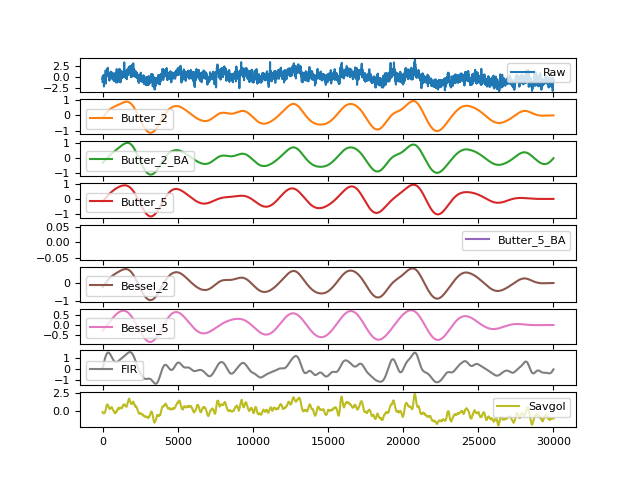
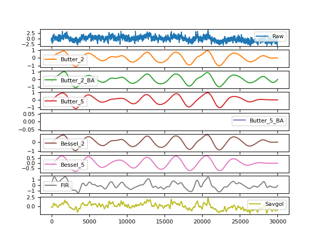# Using Bandpass Filtering in real-life scenarios # Simulate noisy respiratory signal In [8]: original = nk.rsp_simulate(duration=30, method="breathmetrics", noise=0) In [9]: signal = nk.signal_distort(original, noise_frequency=[0.1, 2, 10, 100], noise_amplitude=1, ...: powerline_amplitude=1) ...: # Bandpass between 10 and 30 breaths per minute (respiratory rate range) In [10]: fig3 = pd.DataFrame({"Raw": signal, ....: "Butter_2": nk.signal_filter(signal, lowcut=10/60, highcut=30/60, ....: method="butterworth", order=2), ....: "Butter_2_BA": nk.signal_filter(signal, lowcut=10/60, highcut=30/60, ....: method="butterworth_ba", order=2), ....: "Butter_5": nk.signal_filter(signal, lowcut=10/60, highcut=30/60, ....: method="butterworth", order=5), ....: "Butter_5_BA": nk.signal_filter(signal, lowcut=10/60, highcut=30/60, ....: method="butterworth_ba", order=5), ....: "Bessel_2": nk.signal_filter(signal, lowcut=10/60, highcut=30/60, ....: method="bessel", order=2), ....: "Bessel_5": nk.signal_filter(signal, lowcut=10/60, highcut=30/60, ....: method="bessel", order=5), ....: "FIR": nk.signal_filter(signal, lowcut=10/60, highcut=30/60, ....: method="fir"), ....: "Savgol": nk.signal_filter(signal, method="savgol")}).plot(subplots=True) ....:
{kind=link}
{kind=link}
signal_sanitize()#
- signal_sanitize(signal)[source]#
Reset indexing for Pandas Series
- Parameters
signal (Series) – The indexed input signal (
pandas Dataframe.set_index())- Returns
Series – The default indexed signal
Examples
In [1]: import pandas as pd In [2]: import neurokit2 as nk In [3]: signal = nk.signal_simulate(duration=10, sampling_rate=1000, frequency=1) In [4]: df = pd.DataFrame({'signal': signal, 'id': [x*2 for x in range(len(signal))]}) In [5]: df = df.set_index('id') In [6]: default_index_signal = nk.signal_sanitize(df.signal)
signal_resample()#
- signal_resample(signal, desired_length=None, sampling_rate=None, desired_sampling_rate=None, method='interpolation')[source]#
Resample a continuous signal to a different length or sampling rate
Up- or down-sample a signal. The user can specify either a desired length for the vector, or input the original sampling rate and the desired sampling rate.
- Parameters
signal (Union[list, np.array, pd.Series]) – The signal (i.e., a time series) in the form of a vector of values.
desired_length (int) – The desired length of the signal.
sampling_rate (int) – The original sampling frequency (in Hz, i.e., samples/second).
desired_sampling_rate (int) – The desired (output) sampling frequency (in Hz, i.e., samples/second).
method (str) – Can be
"interpolation"(seescipy.ndimage.zoom()),"numpy"for numpy’s interpolation (seenp.interp()),``”pandas”`` for Pandas’ time series resampling,"poly"(seescipy.signal.resample_poly()) or"FFT"(seescipy.signal.resample()) for the Fourier method."FFT"is the most accurate (if the signal is periodic), but becomes exponentially slower as the signal length increases. In contrast,"interpolation"is the fastest, followed by"numpy","poly"and"pandas".
- Returns
array – Vector containing resampled signal values.
Examples
In [1]: import numpy as np In [2]: import pandas as pd In [3]: import neurokit2 as nk In [4]: signal = np.cos(np.linspace(start=0, stop=20, num=100)) # Downsample In [5]: data = {} In [6]: for m in ["interpolation", "FFT", "poly", "numpy", "pandas"]: ...: data[m] = nk.signal_resample(signal, sampling_rate=500, desired_length=250, method=m) ...:
In [7]: nk.signal_plot([data[m] for m in data.keys()]) In [8]: downsampled_interpolation = nk.signal_resample(signal, method="interpolation", ...: sampling_rate=1000, desired_sampling_rate=500) ...: In [9]: downsampled_fft = nk.signal_resample(signal, method="FFT", ...: sampling_rate=1000, desired_sampling_rate=500) ...: In [10]: downsampled_poly = nk.signal_resample(signal, method="poly", ....: sampling_rate=1000, desired_sampling_rate=500) ....: In [11]: downsampled_numpy = nk.signal_resample(signal, method="numpy", ....: sampling_rate=1000, desired_sampling_rate=500) ....: In [12]: downsampled_pandas = nk.signal_resample(signal, method="pandas", ....: sampling_rate=1000, desired_sampling_rate=500) ....: # Upsample In [13]: upsampled_interpolation = nk.signal_resample( ....: downsampled_interpolation, ....: method="interpolation", ....: sampling_rate=500, ....: desired_sampling_rate=1000 ....: ) ....: In [14]: upsampled_fft = nk.signal_resample(downsampled_fft, method="FFT", ....: sampling_rate=500, desired_sampling_rate=1000) ....: In [15]: upsampled_poly = nk.signal_resample(downsampled_poly, method="poly", ....: sampling_rate=500, desired_sampling_rate=1000) ....: In [16]: upsampled_numpy = nk.signal_resample(downsampled_numpy, method="numpy", ....: sampling_rate=500, desired_sampling_rate=1000) In [17]: upsampled_pandas = nk.signal_resample(downsampled_pandas, method="pandas", ....: sampling_rate=500, desired_sampling_rate=1000) ....: # Compare with original In [18]: fig = pd.DataFrame({"Original": signal, ....: "Interpolation": upsampled_interpolation, ....: "FFT": upsampled_fft, ....: "Poly": upsampled_poly, ....: "Numpy": upsampled_numpy, ....: "Pandas": upsampled_pandas}).plot(style=".-") ....: In [19]: plt.close()
# Timing benchmarks In [20]: %timeit nk.signal_resample(signal, method="interpolation", ....: sampling_rate=1000, desired_sampling_rate=500) ....: %timeit nk.signal_resample(signal, method="FFT", ....: sampling_rate=1000, desired_sampling_rate=500) ....: %timeit nk.signal_resample(signal, method="poly", ....: sampling_rate=1000, desired_sampling_rate=500) ....: %timeit nk.signal_resample(signal, method="numpy", ....: sampling_rate=1000, desired_sampling_rate=500) ....: %timeit nk.signal_resample(signal, method="pandas", ....: sampling_rate=1000, desired_sampling_rate=500) ....:
See also
{kind=link}
Transformation#
signal_binarize()#
- signal_binarize(signal, method='threshold', threshold='auto')[source]#
Binarize a continuous signal
Convert a continuous signal into zeros and ones depending on a given threshold.
- Parameters
signal (Union[list, np.array, pd.Series]) – The signal (i.e., a time series) in the form of a vector of values.
method (str) – The algorithm used to discriminate between the two states. Can be one of
"mixture"(default) or"threshold". If"mixture", will use a Gaussian Mixture Model to categorize between the two states. If"threshold", will consider as activated all points which value is superior to the threshold.threshold (float) – If
methodis"mixture", then it corresponds to the minimum probability required to be considered as activated (if"auto", then 0.5). Ifmethodis"threshold", then it corresponds to the minimum amplitude to detect as onset. If"auto", takes the value between the max and the min.
- Returns
list – A list or array depending on the type passed.
Examples
In [1]: import neurokit2 as nk In [2]: import numpy as np In [3]: import pandas as pd In [4]: signal = np.cos(np.linspace(start=0, stop=20, num=1000)) In [5]: binary = nk.signal_binarize(signal) In [6]: pd.DataFrame({"Raw": signal, "Binary": binary}).plot() Out[6]: <AxesSubplot:>
{kind=link}
signal.decompose()#
- signal_decompose(signal, method='emd', n_components=None, **kwargs)[source]#
Decompose a signal
Signal decomposition into different sources using different methods, such as Empirical Mode Decomposition (EMD) or Singular spectrum analysis (SSA)-based signal separation method.
The extracted components can then be recombined into meaningful sources using
signal_recompose().- Parameters
signal (Union[list, np.array, pd.Series]) – Vector of values.
method (str) – The decomposition method. Can be one of
"emd"or"ssa".n_components (int) – Number of components to extract. Only used for
"ssa"method. IfNone, will default to 50.**kwargs – Other arguments passed to other functions.
- Returns
Array – Components of the decomposed signal.
See also
Examples
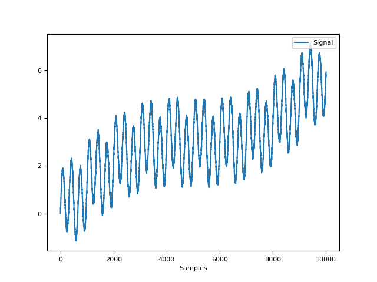In [1]: import neurokit2 as nk # Create complex signal In [2]: signal = nk.signal_simulate(duration=10, frequency=1, noise=0.01) # High freq In [3]: signal += 3 * nk.signal_simulate(duration=10, frequency=3, noise=0.01) # Higher freq In [4]: signal += 3 * np.linspace(0, 2, len(signal)) # Add baseline and trend In [5]: signal += 2 * nk.signal_simulate(duration=10, frequency=0.1, noise=0) In [6]: nk.signal_plot(signal)
# Example 1: Using the EMD method In [7]: components = nk.signal_decompose(signal, method="emd") # Visualize Decomposed Signal Components In [8]: nk.signal_plot(components)

# Example 2: USing the SSA method In [9]: components = nk.signal_decompose(signal, method="ssa", n_components=5) # Visualize Decomposed Signal Components In [10]: nk.signal_plot(components) # Visualize components

{kind=link}
signal_recompose()#
- signal_recompose(components, method='wcorr', threshold=0.5, keep_sd=None, **kwargs)[source]#
Combine signal sources after decomposition
Combine and reconstruct meaningful signal sources after signal decomposition.
- Parameters
components (array) – Array of components obtained via
signal_decompose().method (str) – The decomposition method. Can be one of
"wcorr".threshold (float) – The threshold used to group components together.
keep_sd (float) – If a float is specified, will only keep the reconstructed components that are superior or equal to that percentage of the max standard deviaiton (SD) of the components. For instance,
keep_sd=0.01will remove all components with SD lower than 1% of the max SD. This can be used to filter out noise.**kwargs – Other arguments used to override, for instance
metric="chebyshev".
- Returns
Array – Components of the recomposed components.
Examples
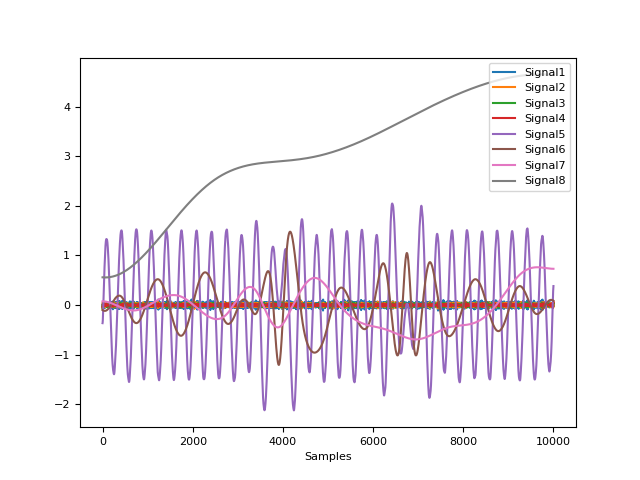In [1]: import neurokit2 as nk # Create complex signal In [2]: signal = nk.signal_simulate(duration=10, frequency=1, noise=0.01) # High freq In [3]: signal += 3 * nk.signal_simulate(duration=10, frequency=3, noise=0.01) # Higher freq In [4]: signal += 3 * np.linspace(0, 2, len(signal)) # Add baseline and trend In [5]: signal += 2 * nk.signal_simulate(duration=10, frequency=0.1, noise=0) # Decompose signal In [6]: components = nk.signal_decompose(signal, method='emd') # Recompose In [7]: recomposed = nk.signal_recompose(components, method='wcorr', threshold=0.90) In [8]: nk.signal_plot(components) # Visualize components
{kind=link}
signal_detrend()#
- signal_detrend(signal, method='polynomial', order=1, regularization=500, alpha=0.75, window=1.5, stepsize=0.02)[source]#
Polynomial detrending of signal
Apply a baseline (order = 0), linear (order = 1), or polynomial (order > 1) detrending to the signal (i.e., removing a general trend). One can also use other methods, such as smoothness priors approach described by Tarvainen (2002) or LOESS regression, but these scale badly for long signals.
- Parameters
signal (Union[list, np.array, pd.Series]) – The signal (i.e., a time series) in the form of a vector of values.
method (str) – Can be one of
"polynomial"(default; traditional detrending of a given order) or"tarvainen2002"to use the smoothness priors approach described by Tarvainen (2002) (mostly used in HRV analyses as a lowpass filter to remove complex trends),"loess"for LOESS smoothing trend removal or"locreg"for local linear regression (the ‘runline’ algorithm from chronux).order (int) – Only used if
methodis"polynomial". The order of the polynomial. 0, 1 or > 1 for a baseline (‘constant detrend’, i.e., remove only the mean), linear (remove the linear trend) or polynomial detrending, respectively. Can also be"auto", in which case it will attempt to find the optimal order to minimize the RMSE.regularization (int) – Only used if
method="tarvainen2002". The regularization parameter (default to 500).alpha (float) – Only used if
methodis “loess”. The parameter which controls the degree of smoothing.window (float) – Only used if
methodis “locreg”. The detrendingwindowshould correspond to the desired low frequency band to remove multiplied by the sampling rate (for instance,1.5*1000will remove frequencies below 1.5Hz for a signal sampled at 1000Hz).stepsize (float) – Only used if
methodis"locreg". Similarly towindow,stepsizeshould also be multiplied by the sampling rate.
- Returns
array – Vector containing the detrended signal.
See also
Examples
In [1]: import numpy as np In [2]: import pandas as pd In [3]: import neurokit2 as nk In [4]: import matplotlib.pyplot as plt # Simulate signal with low and high frequency In [5]: signal = nk.signal_simulate(frequency=[0.1, 2], amplitude=[2, 0.5], sampling_rate=100) In [6]: signal = signal + (3 + np.linspace(0, 6, num=len(signal))) # Add baseline and linear trend # Apply detrending algorithms # Method 1: Default Polynomial Detrending of a Given Order # Constant detrend (removes the mean) In [7]: baseline = nk.signal_detrend(signal, order=0) # Linear Detrend (removes the linear trend) In [8]: linear = nk.signal_detrend(signal, order=1) # Polynomial Detrend (removes the polynomial trend) In [9]: quadratic = nk.signal_detrend(signal, order=2) # Quadratic detrend In [10]: cubic = nk.signal_detrend(signal, order=3) # Cubic detrend In [11]: poly10 = nk.signal_detrend(signal, order=10) # Linear detrend (10th order) # Method 2: Tarvainen's smoothness priors approach (Tarvainen et al., 2002) In [12]: tarvainen = nk.signal_detrend(signal, method="tarvainen2002") # Method 3: LOESS smoothing trend removal In [13]: loess = nk.signal_detrend(signal, method="loess") # Method 4: Local linear regression (100Hz) In [14]: locreg = nk.signal_detrend(signal, method="locreg", ....: window=1.5*100, stepsize=0.02*100) ....: # Visualize different methods In [15]: axes = pd.DataFrame({"Original signal": signal, ....: "Baseline": baseline, ....: "Linear": linear, ....: "Quadratic": quadratic, ....: "Cubic": cubic, ....: "Polynomial (10th)": poly10, ....: "Tarvainen": tarvainen, ....: "LOESS": loess, ....: "Local Regression": locreg}).plot(subplots=True) ....: # Plot horizontal lines to better visualize the detrending In [16]: for subplot in axes: ....: subplot.axhline(y=0, color="k", linestyle="--") ....:

References
Tarvainen, M. P., Ranta-Aho, P. O., & Karjalainen, P. A. (2002). An advanced detrending method with application to HRV analysis. IEEE Transactions on Biomedical Engineering, 49(2), 172-175
signal_distort()#
- signal_distort(signal, sampling_rate=1000, noise_shape='laplace', noise_amplitude=0, noise_frequency=100, powerline_amplitude=0, powerline_frequency=50, artifacts_amplitude=0, artifacts_frequency=100, artifacts_number=5, linear_drift=False, random_state=None, silent=False)[source]#
Signal distortion
Add noise of a given frequency, amplitude and shape to a signal.
- Parameters
signal (Union[list, np.array, pd.Series]) – The signal (i.e., a time series) in the form of a vector of values.
sampling_rate (int) – The sampling frequency of the signal (in Hz, i.e., samples/second).
noise_shape (str) – The shape of the noise. Can be one of
"laplace"(default) or"gaussian".noise_amplitude (float) – The amplitude of the noise (the scale of the random function, relative to the standard deviation of the signal).
noise_frequency (float) – The frequency of the noise (in Hz, i.e., samples/second).
powerline_amplitude (float) – The amplitude of the powerline noise (relative to the standard deviation of the signal).
powerline_frequency (float) – The frequency of the powerline noise (in Hz, i.e., samples/second).
artifacts_amplitude (float) – The amplitude of the artifacts (relative to the standard deviation of the signal).
artifacts_frequency (int) – The frequency of the artifacts (in Hz, i.e., samples/second).
artifacts_number (int) – The number of artifact bursts. The bursts have a random duration between 1 and 10% of the signal duration.
linear_drift (bool) – Whether or not to add linear drift to the signal.
random_state (int) – Seed for the random number generator. Keep it fixed for reproducible results.
silent (bool) – Whether or not to display warning messages.
- Returns
array – Vector containing the distorted signal.
Examples
In [1]: import numpy as np In [2]: import pandas as pd In [3]: import neurokit2 as nk In [4]: signal = nk.signal_simulate(duration=10, frequency=0.5) # Noise In [5]: noise = pd.DataFrame({"Freq100": nk.signal_distort(signal, noise_frequency=200), ...: "Freq50": nk.signal_distort(signal, noise_frequency=50), ...: "Freq10": nk.signal_distort(signal, noise_frequency=10), ...: "Freq5": nk.signal_distort(signal, noise_frequency=5), ...: "Raw": signal}).plot() ...:
# Artifacts In [6]: artifacts = pd.DataFrame({"1Hz": nk.signal_distort(signal, noise_amplitude=0, ...: artifacts_frequency=1, ...: artifacts_amplitude=0.5), ...: "5Hz": nk.signal_distort(signal, noise_amplitude=0, ...: artifacts_frequency=5, ...: artifacts_amplitude=0.2), ...: "Raw": signal}).plot() ...:

{kind=link}
signal_flatline()#
- signal_flatline(signal, threshold=0.01)[source]#
Return the Flatline Percentage of the Signal
- Parameters
signal (Union[list, np.array, pd.Series]) – The signal (i.e., a time series) in the form of a vector of values.
threshold (float, optional) – Flatline threshold relative to the biggest change in the signal. This is the percentage of the maximum value of absolute consecutive differences.
- Returns
float – Percentage of signal where the absolute value of the derivative is lower then the threshold.
Examples
In [1]: import neurokit2 as nk In [2]: signal = nk.signal_simulate(duration=5) In [3]: nk.signal_flatline(signal) Out[3]: 0.008
signal_interpolate()#
- signal_interpolate(x_values, y_values, x_new=None, method='quadratic')[source]#
Interpolate a signal
Interpolate a signal using different methods.
- Parameters
x_values (Union[list, np.array, pd.Series]) – The samples corresponding to the values to be interpolated.
y_values (Union[list, np.array, pd.Series]) – The values to be interpolated.
x_new (Union[list, np.array, pd.Series] or int) – The samples at which to interpolate the y_values. Samples before the first value in x_values or after the last value in x_values will be extrapolated. If an integer is passed, nex_x will be considered as the desired length of the interpolated signal between the first and the last values of x_values. No extrapolation will be done for values before or after the first and the last values of x_values.
method (str) – Method of interpolation. Can be
"linear","nearest","zero","slinear","quadratic","cubic","previous","next"or"monotone_cubic". The methods"zero","slinear",``”quadratic”`` and"cubic"refer to a spline interpolation of zeroth, first, second or third order; whereas"previous"and"next"simply return the previous or next value of the point. An integer specifying the order of the spline interpolator to use. See here for details on the"monotone_cubic"method.
- Returns
array – Vector of interpolated samples.
Examples
In [1]: import numpy as np In [2]: import neurokit2 as nk In [3]: import matplotlib.pyplot as plt # Generate Simulated Signal In [4]: signal = nk.signal_simulate(duration=2, sampling_rate=10) # We want to interpolate to 2000 samples In [5]: x_values = np.linspace(0, 2000, num=len(signal), endpoint=False) In [6]: x_new = np.linspace(0, 2000, num=2000, endpoint=False) # Visualize all interpolation methods In [7]: nk.signal_plot([ ...: nk.signal_interpolate(x_values, signal, x_new=x_new, method="zero"), ...: nk.signal_interpolate(x_values, signal, x_new=x_new, method="linear"), ...: nk.signal_interpolate(x_values, signal, x_new=x_new, method="quadratic"), ...: nk.signal_interpolate(x_values, signal, x_new=x_new, method="cubic"), ...: nk.signal_interpolate(x_values, signal, x_new=x_new, method="previous"), ...: nk.signal_interpolate(x_values, signal, x_new=x_new, method="next"), ...: nk.signal_interpolate(x_values, signal, x_new=x_new, method="monotone_cubic") ...: ], labels = ["Zero", "Linear", "Quadratic", "Cubic", "Previous", "Next", "Monotone Cubic"]) ...: # Add original data points In [8]: plt.scatter(x_values, signal, label="original datapoints", zorder=3) Out[8]: <matplotlib.collections.PathCollection at 0x7f6c00b54ee0>
{kind=link}
signal_merge()#
- signal_merge(signal1, signal2, time1=[0, 10], time2=[0, 10])[source]#
Arbitrary addition of two signals with different time ranges
- Parameters
signal1 (Union[list, np.array, pd.Series]) – The first signal (i.e., a time series)s in the form of a vector of values.
signal2 (Union[list, np.array, pd.Series]) – The second signal (i.e., a time series)s in the form of a vector of values.
time1 (list) – Lists containing two numeric values corresponding to the beginning and end of
signal1.time2 (list) – Same as above, but for
signal2.
- Returns
array – Vector containing the sum of the two signals.
Examples
In [1]: import numpy as np In [2]: import pandas as pd In [3]: import neurokit2 as nk In [4]: signal1 = np.cos(np.linspace(start=0, stop=10, num=100)) In [5]: signal2 = np.cos(np.linspace(start=0, stop=20, num=100)) In [6]: signal = nk.signal_merge(signal1, signal2, time1=[0, 10], time2=[-5, 5]) In [7]: nk.signal_plot(signal)
{kind=link}
signal_noise()#
- signal_noise(duration=10, sampling_rate=1000, beta=1)[source]#
Simulate noise
This function generates pure Gaussian
(1/f)**betanoise. The power-spectrum of the generated noise is proportional toS(f) = (1 / f)**beta. The following categories of noise have been described:violet noise: beta = -2
blue noise: beta = -1
white noise: beta = 0
flicker / pink noise: beta = 1
brown noise: beta = 2
- Parameters
duration (float) – Desired length of duration (s).
sampling_rate (int) – The desired sampling rate (in Hz, i.e., samples/second).
beta (float) – The noise exponent.
- Returns
noise (array) – The signal of pure noise.
References
Timmer, J., & Koenig, M. (1995). On generating power law noise. Astronomy and Astrophysics, 300, 707.
Examples
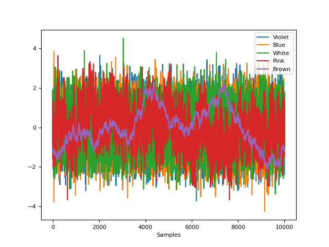In [1]: import neurokit2 as nk In [2]: import matplotlib.pyplot as plt # Generate pure noise In [3]: violet = nk.signal_noise(beta=-2) In [4]: blue = nk.signal_noise(beta=-1) In [5]: white = nk.signal_noise(beta=0) In [6]: pink = nk.signal_noise(beta=1) In [7]: brown = nk.signal_noise(beta=2) # Visualize In [8]: nk.signal_plot([violet, blue, white, pink, brown], ...: standardize=True, ...: labels=["Violet", "Blue", "White", "Pink", "Brown"]) ...:
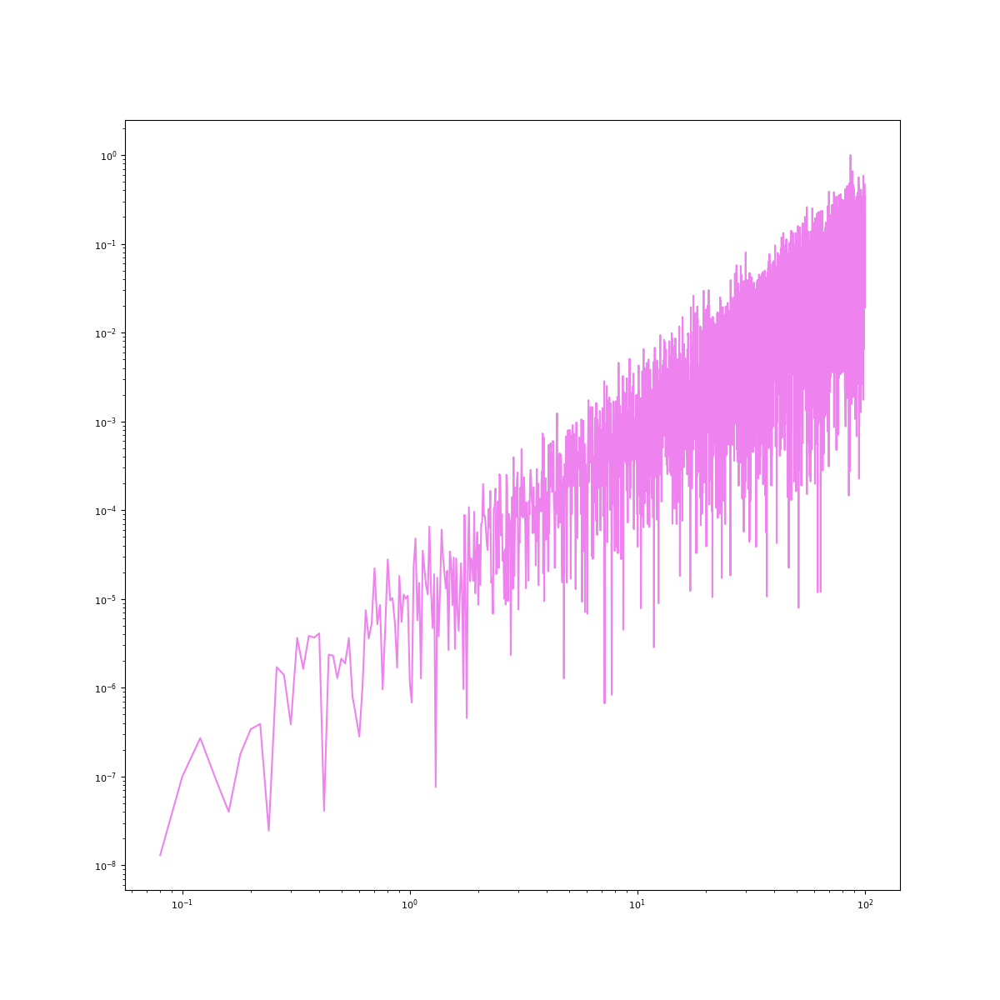# Visualize spectrum In [9]: psd_violet = nk.signal_psd(violet, sampling_rate=200, method="fft") In [10]: psd_blue = nk.signal_psd(blue, sampling_rate=200, method="fft") In [11]: psd_white = nk.signal_psd(white, sampling_rate=200, method="fft") In [12]: psd_pink = nk.signal_psd(pink, sampling_rate=200, method="fft") In [13]: psd_brown = nk.signal_psd(brown, sampling_rate=200, method="fft") In [14]: plt.loglog(psd_violet["Frequency"], psd_violet["Power"], c="violet") Out[14]: [<matplotlib.lines.Line2D at 0x7f6c09f1edd0>] In [15]: plt.loglog(psd_blue["Frequency"], psd_blue["Power"], c="blue") Out[15]: [<matplotlib.lines.Line2D at 0x7f6bf5307040>] In [16]: plt.loglog(psd_white["Frequency"], psd_white["Power"], c="grey") Out[16]: [<matplotlib.lines.Line2D at 0x7f6c0548ebf0>] In [17]: plt.loglog(psd_pink["Frequency"], psd_pink["Power"], c="pink") Out[17]: [<matplotlib.lines.Line2D at 0x7f6bf56e0070>] In [18]: plt.loglog(psd_brown["Frequency"], psd_brown["Power"], c="brown") Out[18]: [<matplotlib.lines.Line2D at 0x7f6c03231450>]
{kind=link}
{kind=link}
signal_surrogate()#
- signal_surrogate(signal, method='IAAFT', **kwargs)[source]#
Create Signal Surrogates
Generate a surrogate version of a signal. Different methods are available, such as:
"random": Performs a random permutation of the signal value. This way, the signal distribution is unaffected and the serial correlations are cancelled, yielding a whitened signal with an distribution identical to that of the original."IAAFT": Returns an Iterative Amplitude Adjusted Fourier Transform (IAAFT) surrogate. It is a phase randomized, amplitude adjusted surrogates with the same power spectrum (to a very high accuracy) and distribution as the original data, using an iterative scheme.
- Parameters
signal (Union[list, np.array, pd.Series]) – The signal (i.e., a time series) in the form of a vector of values.
method (str) – Can be
"random"or"IAAFT".**kwargs – Other keywords arguments, such as ``max_iter``(by default 1000).
- Returns
surrogate (array) – Surrogate signal.
Examples
Create surrogates using different methods.
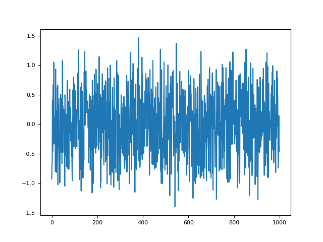In [1]: import neurokit2 as nk In [2]: import matplotlib.pyplot as plt In [3]: signal = nk.signal_simulate(duration = 1, frequency = [3, 5], noise = 0.1) In [4]: surrogate_iaaft = nk.signal_surrogate(signal, method = "IAAFT") In [5]: surrogate_random = nk.signal_surrogate(signal, method = "random") In [6]: plt.plot(surrogate_random, label = "Random Surrogate") Out[6]: [<matplotlib.lines.Line2D at 0x7f6c09d57280>] In [7]: plt.plot(surrogate_iaaft, label = "IAAFT Surrogate") Out[7]: [<matplotlib.lines.Line2D at 0x7f6c09fc9c60>] In [8]: plt.plot(signal, label = "Original") Out[8]: [<matplotlib.lines.Line2D at 0x7f6c09fca6b0>] In [9]: plt.legend() Out[9]: <matplotlib.legend.Legend at 0x7f6c07271c30> In [10]: plt.close()
As we can see, the signal pattern is destroyed by random surrogates, but not in the IAAFT one. And their distributions are identical:
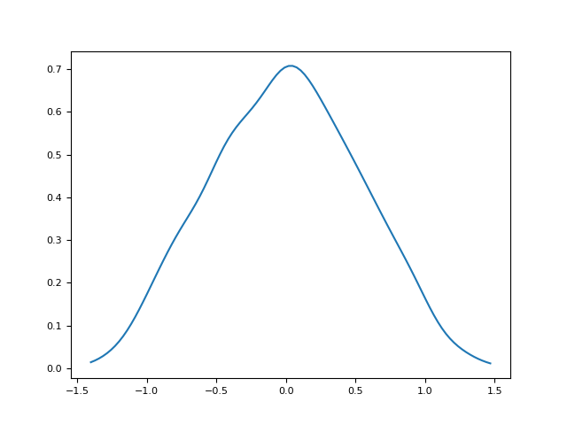In [11]: plt.plot(*nk.density(signal), label = "Original") Out[11]: [<matplotlib.lines.Line2D at 0x7f6c01db3940>] In [12]: plt.plot(*nk.density(surrogate_iaaft), label = "IAAFT Surrogate") Out[12]: [<matplotlib.lines.Line2D at 0x7f6c09d77610>] In [13]: plt.plot(*nk.density(surrogate_random), label = "Random Surrogate") Out[13]: [<matplotlib.lines.Line2D at 0x7f6c09d76fb0>] In [14]: plt.legend() Out[14]: <matplotlib.legend.Legend at 0x7f6c084b7c40>
However, the power spectrum of the IAAFT surrogate is preserved.
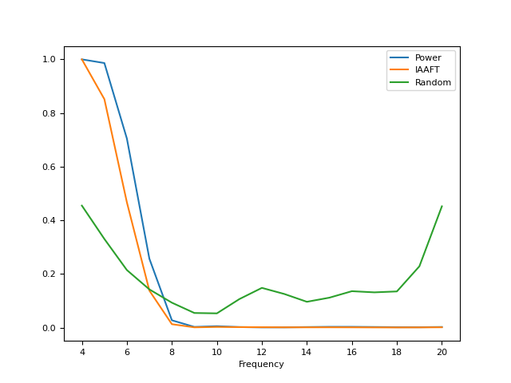In [15]: f = nk.signal_psd(signal, max_frequency=20) In [16]: f["IAAFT"] = nk.signal_psd(surrogate_iaaft, max_frequency=20)["Power"] In [17]: f["Random"] = nk.signal_psd(surrogate_random, max_frequency=20)["Power"] In [18]: f.plot("Frequency", ["Power", "IAAFT", "Random"]) Out[18]: <AxesSubplot:xlabel='Frequency'>
References
Schreiber, T., & Schmitz, A. (1996). Improved surrogate data for nonlinearity tests. Physical review letters, 77(4), 635.
{kind=link}
{kind=link}
{kind=link}
Peaks#
signal_findpeaks()#
- signal_findpeaks(signal, height_min=None, height_max=None, relative_height_min=None, relative_height_max=None, relative_mean=True, relative_median=False, relative_max=False)[source]#
Find peaks in a signal
Locate peaks (local maxima) in a signal and their related characteristics, such as height (prominence), width and distance with other peaks.
- Parameters
signal (Union[list, np.array, pd.Series]) – The signal (i.e., a time series) in the form of a vector of values.
height_min (float) – The minimum height (i.e., amplitude in terms of absolute values). For example,
height_min=20will remove all peaks which height is smaller or equal to 20 (in the provided signal’s values).height_max (float) – The maximum height (i.e., amplitude in terms of absolute values).
relative_height_min (float) – The minimum height (i.e., amplitude) relative to the sample (see below). For example,
relative_height_min=-2.96will remove all peaks which height lies below 2.96 standard deviations from the mean of the heights.relative_height_max (float) – The maximum height (i.e., amplitude) relative to the sample (see below).
relative_mean (bool) – If a relative threshold is specified, how should it be computed (i.e., relative to what?).
relative_mean=Truewill use Z-scores.relative_median (bool) – If a relative threshold is specified, how should it be computed (i.e., relative to what?). Relative to median uses a more robust form of standardization (see
standardize()).relative_max (bool) – If a relative threshold is specified, how should it be computed (i.e., relative to what?). Relative to max will consider the maximum height as the reference.
- Returns
dict –
Returns a dict itself containing 5 arrays:
"Peaks": contains the peaks indices (as relative to the given signal). For instance, the value 3 means that the third data point of the signal is a peak."Distance": contains, for each peak, the closest distance with another peak. Note that these values will be recomputed after filtering to match the selected peaks."Height": contains the prominence of each peak. Seescipy.signal.peak_prominences()."Width": contains the width of each peak. Seescipy.signal.peak_widths()."Onset": contains the onset, start (or left trough), of each peak."Offset": contains the offset, end (or right trough), of each peak.
Examples
In [1]: import neurokit2 as nk # Simulate a Signal In [2]: signal = nk.signal_simulate(duration=5) In [3]: info = nk.signal_findpeaks(signal) # Visualize Onsets of Peaks and Peaks of Signal In [4]: nk.events_plot([info["Onsets"], info["Peaks"]], signal)
In [5]: import scipy.misc # Load actual ECG Signal In [6]: ecg = scipy.misc.electrocardiogram() In [7]: signal = ecg[0:1000] # Find Unfiltered and Filtered Peaks In [8]: info1 = nk.signal_findpeaks(signal, relative_height_min=0) In [9]: info2 = nk.signal_findpeaks(signal, relative_height_min=1) # Visualize Peaks In [10]: nk.events_plot([info1["Peaks"], info2["Peaks"]], signal)
See also
{kind=link}
{kind=link}
signal_fixpeaks()#
- signal_fixpeaks(peaks, sampling_rate=1000, iterative=True, show=False, interval_min=None, interval_max=None, relative_interval_min=None, relative_interval_max=None, robust=False, method='Kubios', **kwargs)[source]#
Correct Erroneous Peak Placements
Identify and correct erroneous peak placements based on outliers in peak-to-peak differences (period).
- Parameters
peaks (list or array or DataFrame or Series or dict) – The samples at which the peaks occur. If an array is passed in, it is assumed that it was obtained with
signal_findpeaks(). If a DataFrame is passed in, it is assumed to be obtained withecg_findpeaks()orppg_findpeaks()and to be of the same length as the input signal.sampling_rate (int) – The sampling frequency of the signal that contains the peaks (in Hz, i.e., samples/second).
iterative (bool) – Whether or not to apply the artifact correction repeatedly (results in superior artifact correction).
show (bool) – Whether or not to visualize artifacts and artifact thresholds.
interval_min (float) – Only when
method = "neurokit". The minimum interval between the peaks.interval_max (float) – Only when
method = "neurokit". The maximum interval between the peaks.relative_interval_min (float) – Only when
method = "neurokit". The minimum interval between the peaks as relative to the sample (expressed in standard deviation from the mean).relative_interval_max (float) – Only when
method = "neurokit". The maximum interval between the peaks as relative to the sample (expressed in standard deviation from the mean).robust (bool) – Only when
method = "neurokit". Use a robust method of standardization (see standardize) for the relative thresholds.method (str) – Either
"Kubios"or"neurokit"."Kubios"uses the artifact detection and correction described in Lipponen, J. A., & Tarvainen, M. P. (2019). Note that"Kubios"is only meant for peaks in ECG or PPG."neurokit"can be used with peaks in ECG, PPG, or respiratory data.**kwargs – Other keyword arguments.
- Returns
peaks_clean (array) – The corrected peak locations.
artifacts (dict) – Only if
method="Kubios". A dictionary containing the indices of artifacts, accessible with the keys"ectopic","missed","extra", and"longshort".
See also
signal_findpeaks,ecg_findpeaks,ecg_peaks,ppg_findpeaks,ppg_peaksExamples
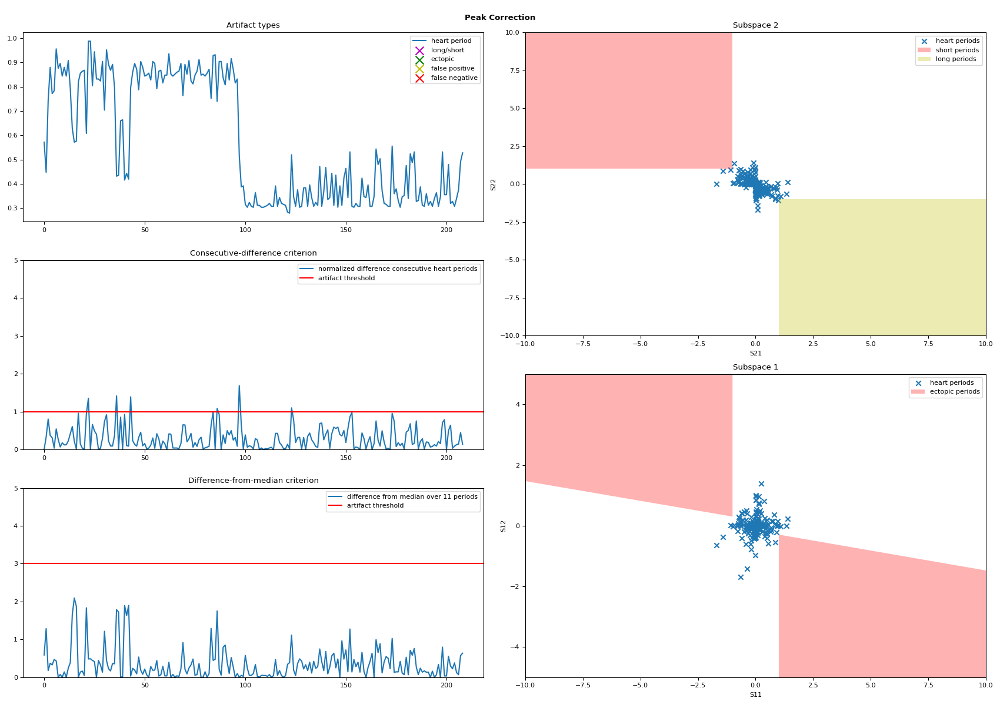In [1]: import neurokit2 as nk # Simulate ECG data In [2]: ecg = nk.ecg_simulate(duration=240, noise=0.25, heart_rate=70, random_state=42) # Identify and Correct Peaks using "Kubios" Method In [3]: rpeaks_uncorrected = nk.ecg_findpeaks(ecg) In [4]: artifacts, rpeaks_corrected = nk.signal_fixpeaks( ...: rpeaks_uncorrected, iterative=True, method="Kubios", show=True ...: ) ...:
# Visualize Artifact Correction In [5]: rate_corrected = nk.signal_rate(rpeaks_corrected, desired_length=len(ecg)) In [6]: rate_uncorrected = nk.signal_rate(rpeaks_uncorrected, desired_length=len(ecg)) In [7]: nk.signal_plot( ...: [rate_uncorrected, rate_corrected], ...: labels=["Heart Rate Uncorrected", "Heart Rate Corrected"] ...: ) ...:

In [8]: import numpy as np # Simulate Abnormal Signals In [9]: signal = nk.signal_simulate(duration=4, sampling_rate=1000, frequency=1) In [10]: peaks_true = nk.signal_findpeaks(signal)["Peaks"] In [11]: peaks = np.delete(peaks_true, [1]) # create gaps due to missing peaks In [12]: signal = nk.signal_simulate(duration=20, sampling_rate=1000, frequency=1) In [13]: peaks_true = nk.signal_findpeaks(signal)["Peaks"] In [14]: peaks = np.delete(peaks_true, [5, 15]) # create gaps In [15]: peaks = np.sort(np.append(peaks, [1350, 11350, 18350])) # add artifacts # Identify and Correct Peaks using 'Neurokit' Method In [16]: peaks_corrected = nk.signal_fixpeaks( ....: peaks=peaks, interval_min=0.5, interval_max=1.5, method="neurokit" ....: ) ....: # Plot and shift original peaks to the right to see the difference. In [17]: nk.events_plot([peaks + 50, peaks_corrected], signal)
References
Lipponen, J. A., & Tarvainen, M. P. (2019). A robust algorithm for heart rate variability time series artefact correction using novel beat classification. Journal of medical engineering & technology, 43(3), 173-181. 10.1080/03091902.2019.1640306
{kind=link}
{kind=link}
Analysis#
signal_autocor()#
- signal_autocor(signal, lag=None, demean=True, method='fft', show=False)[source]#
Autocorrelation (ACF)
Compute the autocorrelation of a signal.
- Parameters
signal (Union[list, np.array, pd.Series]) – Vector of values.
lag (int) – Time lag. If specified, one value of autocorrelation between signal with its lag self will be returned.
demean (bool) – If
True, the mean of the signal will be subtracted from the signal before ACF computation.method (str) – Can be
"correlation"(usingnp.correlate()) or"fft"(Fast Fourier Transform; default).show (bool) – If
True, plot the autocorrelation at all values of lag.
- Returns
r (float) – The cross-correlation of the signal with itself at different time lags. Minimum time lag is 0, maximum time lag is the length of the signal. Or a correlation value at a specific lag if lag is not
None.info (dict) – A dictionary containing additional information, such as the confidence interval.
Examples
In [1]: import neurokit2 as nk # Example 1: Using 'Correlation' Method In [2]: signal = [1, 2, 3, 4, 5] In [3]: r, info = nk.signal_autocor(signal, show=True, method='correlate')
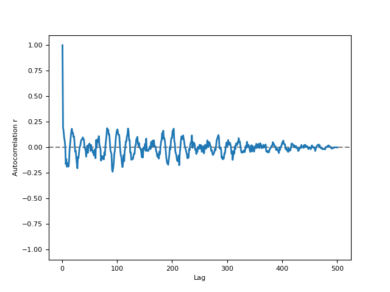# Example 2: Using 'FFT' Method In [4]: signal = nk.signal_simulate(duration=5, sampling_rate=100, frequency=[5, 6], noise=0.5) In [5]: r, info = nk.signal_autocor(signal, lag=2, method='fft', show=True)
{kind=link}
{kind=link}
signal_changepoints()#
- signal_changepoints(signal, change='meanvar', penalty=None, show=False)[source]#
Change Point Detection
Only the PELT method is implemented for now.
- Parameters
signal (Union[list, np.array, pd.Series]) – Vector of values.
change (str) – Can be one of
"meanvar"(default),"mean"or"var".penalty (float) – The algorithm penalty. Defaults to
np.log(len(signal)).show (bool) – Defaults to
False.
- Returns
Array – Values indicating the samples at which the changepoints occur.
Fig – Figure of plot of signal with markers of changepoints.
Examples
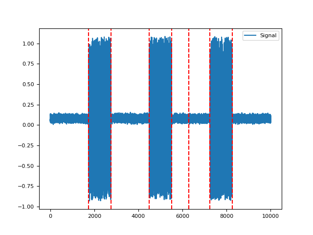In [1]: import neurokit2 as nk In [2]: signal = nk.emg_simulate(burst_number=3) In [3]: nk.signal_changepoints(signal, change="var", show=True) Out[3]: array([1750, 2750, 4500, 5500, 7250, 8250])
References
Killick, R., Fearnhead, P., & Eckley, I. A. (2012). Optimal detection of changepoints with a linear computational cost. Journal of the American Statistical Association, 107(500), 1590-1598.
{kind=link}
signal_period()#
- signal_period(peaks, sampling_rate=1000, desired_length=None, interpolation_method='monotone_cubic')[source]#
Calculate signal period from a series of peaks
- Parameters
peaks (Union[list, np.array, pd.DataFrame, pd.Series, dict]) – The samples at which the peaks occur. If an array is passed in, it is assumed that it was obtained with
signal_findpeaks(). If a DataFrame is passed in, it is assumed it is of the same length as the input signal in which occurrences of R-peaks are marked as “1”, with such containers obtained with e.g.,ecg_findpeaks()orrsp_findpeaks().sampling_rate (int) – The sampling frequency of the signal that contains peaks (in Hz, i.e., samples/second). Defaults to 1000.
desired_length (int) – If left at the default
None, the returned period will have the same number of elements aspeaks. If set to a value larger than the sample at which the last peak occurs in the signal (i.e.,peaks[-1]), the returned period will be interpolated between peaks overdesired_lengthsamples. To interpolate the period over the entire duration of the signal, setdesired_lengthto the number of samples in the signal. Cannot be smaller than or equal to the sample at which the last peak occurs in the signal. Defaults toNone.interpolation_method (str) – Method used to interpolate the rate between peaks. See
signal_interpolate()."monotone_cubic"is chosen as the default interpolation method since it ensures monotone interpolation between data points (i.e., it prevents physiologically implausible “overshoots” or “undershoots” in the y-direction). In contrast, the widely used cubic spline interpolation does not ensure monotonicity.
- Returns
array – A vector containing the period.
See also
Examples
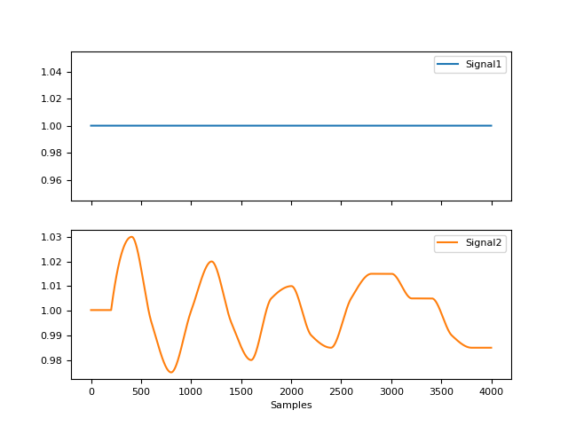In [1]: import neurokit2 as nk In [2]: signal = nk.signal_simulate(duration=10, sampling_rate=1000, frequency=1) In [3]: info = nk.signal_findpeaks(signal) In [4]: period = nk.signal_period(peaks=info["Peaks"], desired_length=len(signal)) In [5]: nk.signal_plot(period)
{kind=link}
signal_phase()#
- signal_phase(signal, method='radians')[source]#
Compute the phase of the signal
The real phase has the property to rotate uniformly, leading to a uniform distribution density. The prophase typically doesn’t fulfill this property. The following functions applies a nonlinear transformation to the phase signal that makes its distribution exactly uniform. If a binary vector is provided (containing 2 unique values), the function will compute the phase of completion of each phase as denoted by each value.
- Parameters
signal (Union[list, np.array, pd.Series]) – The signal (i.e., a time series) in the form of a vector of values.
method (str) – The values in which the phase is expressed. Can be
"radians"(default),"degrees"(for values between 0 and 360) or"percents"(for values between 0 and 1).
See also
- Returns
array – A vector containing the phase of the signal, between 0 and 2*pi.
Examples
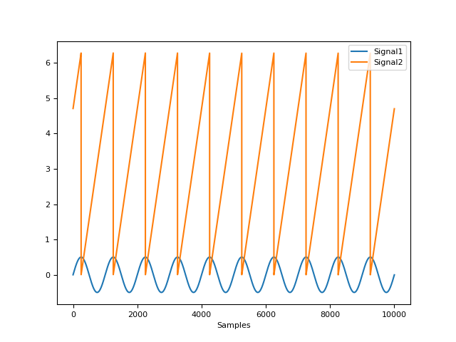In [1]: import neurokit2 as nk In [2]: signal = nk.signal_simulate(duration=10) In [3]: phase = nk.signal_phase(signal) In [4]: nk.signal_plot([signal, phase])
..ipython:: python
rsp = nk.rsp_simulate(duration=30) phase = nk.signal_phase(rsp, method=”degrees”) @savefig p_signal_phase2.png scale=100% nk.signal_plot([rsp, phase]) @suppress plt.close()
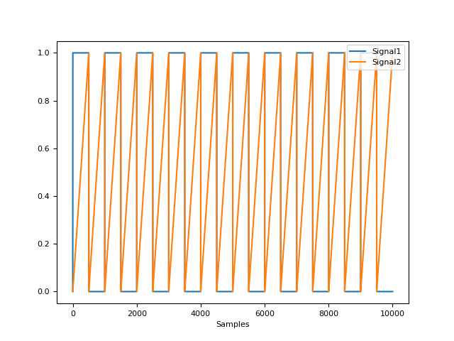# Percentage of completion of two phases In [5]: signal = nk.signal_binarize(nk.signal_simulate(duration=10)) In [6]: phase = nk.signal_phase(signal, method="percents") In [7]: nk.signal_plot([signal, phase])
{kind=link}
{kind=link}
signal_plot()#
- signal_plot(signal, sampling_rate=None, subplots=False, standardize=False, labels=None, **kwargs)[source]#
Plot signal with events as vertical lines
- Parameters
signal (array or DataFrame) – Signal array (can be a dataframe with many signals).
sampling_rate (int) – The sampling frequency of the signal (in Hz, i.e., samples/second). Needs to be supplied if the data should be plotted over time in seconds. Otherwise the data is plotted over samples. Defaults to
None.subplots (bool) – If
True, each signal is plotted in a subplot.standardize (bool) – If
True, all signals will have the same scale (useful for visualisation).labels (str or list) – Defaults to
None.**kwargs (optional) – Arguments passed to matplotlib plotting.
Examples
In [1]: import numpy as np In [2]: import pandas as pd In [3]: import neurokit2 as nk In [4]: signal = nk.signal_simulate(duration=10, sampling_rate=1000) In [5]: nk.signal_plot(signal, sampling_rate=1000, color="red")
In [6]: data = pd.DataFrame({"Signal2": np.cos(np.linspace(start=0, stop=20, num=1000)), ...: "Signal3": np.sin(np.linspace(start=0, stop=20, num=1000)), ...: "Signal4": nk.signal_binarize(np.cos(np.linspace(start=0, stop=40, num=1000)))}) ...: In [7]: nk.signal_plot(data, labels=['signal_1', 'signal_2', 'signal_3'], subplots=True) In [8]: nk.signal_plot([signal, data], standardize=True)
{kind=link}
{kind=link}
signal_power()#
- signal_power(signal, frequency_band, sampling_rate=1000, continuous=False, show=False, normalize=True, **kwargs)[source]#
Compute the power of a signal in a given frequency band
- Parameters
signal (Union[list, np.array, pd.Series]) – The signal (i.e., a time series) in the form of a vector of values.
frequency_band (tuple or list) – Tuple or list of tuples indicating the range of frequencies to compute the power in.
sampling_rate (int) – The sampling frequency of the signal (in Hz, i.e., samples/second).
continuous (bool) – Compute instant frequency, or continuous power.
show (bool) – If
True, will return a Poincaré plot. Defaults toFalse.normalize (bool) – Normalization of power by maximum PSD value. Default to
True. Normalization allows comparison between different PSD methods.**kwargs – Keyword arguments to be passed to
signal_psd().
See also
- Returns
pd.DataFrame – A DataFrame containing the Power Spectrum values and a plot if
showisTrue.
Examples
In [1]: import neurokit2 as nk In [2]: import numpy as np # Instant power In [3]: signal = nk.signal_simulate(duration=60, frequency=[10, 15, 20], ...: amplitude = [1, 2, 3], noise = 2) ...: In [4]: power_plot = nk.signal_power(signal, frequency_band=[(8, 12), (18, 22)], method="welch", show=True)
..ipython:: python
# Continuous (simulated signal) signal = np.concatenate((nk.ecg_simulate(duration=30, heart_rate=75), nk.ecg_simulate(duration=30, heart_rate=85))) power = nk.signal_power(signal, frequency_band=[(72/60, 78/60), (82/60, 88/60)], continuous=True) processed, _ = nk.ecg_process(signal) power[“ECG_Rate”] = processed[“ECG_Rate”]
@savefig p_signal_power2.png scale=100% nk.signal_plot(power, standardize=True) @suppress plt.close()
# Continuous (real signal) In [5]: signal = nk.data("bio_eventrelated_100hz")["ECG"] In [6]: power = nk.signal_power(signal, sampling_rate=100, frequency_band=[(0.12, 0.15), (0.15, 0.4)], continuous=True) In [7]: processed, _ = nk.ecg_process(signal, sampling_rate=100) In [8]: power["ECG_Rate"] = processed["ECG_Rate"] In [9]: nk.signal_plot(power, standardize=True) In [10]: plt.close()
{kind=link}
{kind=link}
signal_psd()#
- signal_psd(signal, sampling_rate=1000, method='welch', show=False, normalize=True, min_frequency='default', max_frequency=inf, window=None, window_type='hann', order=16, order_criteria='KIC', order_corrected=True, silent=True, **kwargs)[source]#
Compute the Power Spectral Density (PSD)
- Parameters
signal (Union[list, np.array, pd.Series]) – The signal (i.e., a time series) in the form of a vector of values.
sampling_rate (int) – The sampling frequency of the signal (in Hz, i.e., samples/second).
method (str) – Either
"welch"(default),"fft","multitapers"(requires the ‘mne’ package),"lombscargle"(requires the ‘astropy’ package) or"burg".show (bool) – If
True, will return a plot. IfFalse, will return the density values that can be plotted externally.normalize (bool) – Normalization of power by maximum PSD value. Default to
True. Normalization allows comparison between different PSD methods.min_frequency (str, float) – The minimum frequency. If default, min_frequency is chosen based on the sampling rate and length of signal to optimize the frequency resolution.
max_frequency (float) – The maximum frequency.
window (int) – Length of each window in seconds (for “Welch” method). If
None(default), window will be automatically calculated to capture at least 2 cycles of min_frequency. If the length of recording does not allow the formal, window will be default to half of the length of recording.window_type (str) – Desired window to use. Defaults to
"hann". Seescipy.signal.get_window()for list of windows.order (int) – The order of autoregression (only used for autoregressive (AR) methods such as
"burg").order_criteria (str) – The criteria to automatically select order in parametric PSD (only used for autoregressive (AR) methods such as
"burg").order_corrected (bool) – Should the order criteria (AIC or KIC) be corrected? If unsure which method to use to choose the order, rely on the default (i.e., the corrected KIC).
silent (bool) – If
False, warnings will be printed. Default toTrue.**kwargs (optional) – Keyword arguments to be passed to
scipy.signal.welch().
See also
signal_filter,mne.time_frequency.psd_array_multitaper,scipy.signal.welch- Returns
data (pd.DataFrame) – A DataFrame containing the Power Spectrum values and a plot if
showisTrue.
Examples
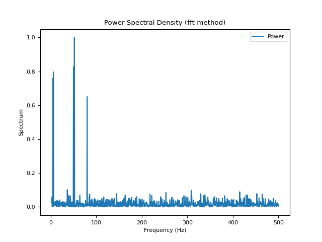In [1]: import neurokit2 as nk In [2]: signal = nk.signal_simulate(duration=2, frequency=[5, 6, 50, 52, 80], noise=0.5) # FFT method (based on numpy) In [3]: psd_multitapers = nk.signal_psd(signal, method="fft", show=True)
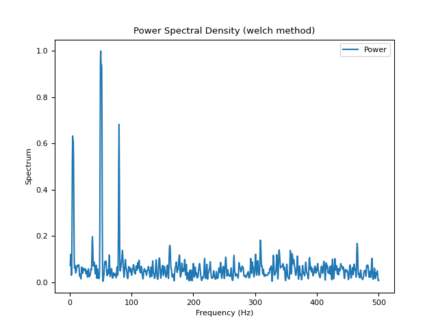# Welch method (based on scipy) In [4]: psd_welch = nk.signal_psd(signal, method="welch", min_frequency=1, show=True)
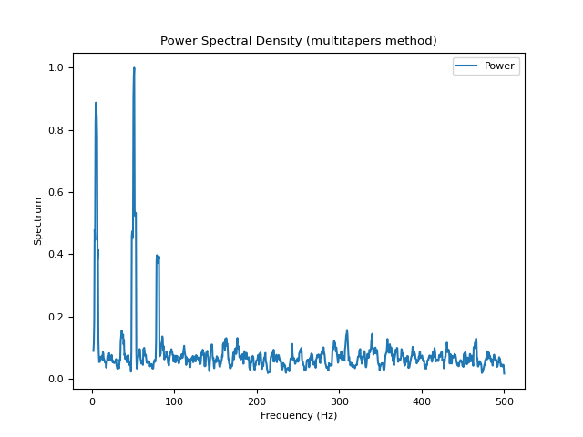# Multitapers method (requires MNE) In [5]: psd_multitapers = nk.signal_psd(signal, method="multitapers", show=True)
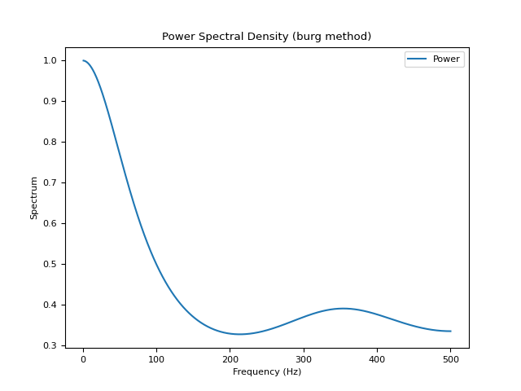# Burg method In [6]: psd_burg = nk.signal_psd(signal, method="burg", min_frequency=1, show=True)
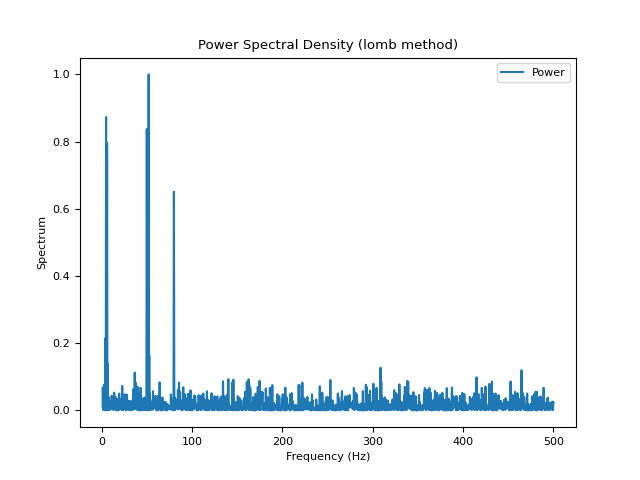# Lomb method (requires AstroPy) In [7]: psd_lomb = nk.signal_psd(signal, method="lomb", min_frequency=1, show=True)
{kind=link}
{kind=link}
{kind=link}
{kind=link}
{kind=link}
signal_rate()#
- signal_rate(peaks, sampling_rate=1000, desired_length=None, interpolation_method='monotone_cubic')[source]#
Compute Signal Rate
Calculate signal rate (per minute) from a series of peaks. It is a general function that works for any series of peaks (i.e., not specific to a particular type of signal). It is computed as
60 / period, where the period is the time between the peaks (see func:.signal_period).Note
This function is implemented under
signal_rate(), but it also re-exported under different names, such asecg_rate(),ppg_rate(), orrsp_rate(). The aliases provided for consistency.- Parameters
peaks (Union[list, np.array, pd.DataFrame, pd.Series, dict]) – The samples at which the peaks occur. If an array is passed in, it is assumed that it was obtained with
signal_findpeaks(). If a DataFrame is passed in, it is assumed it is of the same length as the input signal in which occurrences of R-peaks are marked as “1”, with such containers obtained with e.g., :func:.`ecg_findpeaks` orrsp_findpeaks().sampling_rate (int) – The sampling frequency of the signal that contains peaks (in Hz, i.e., samples/second). Defaults to 1000.
desired_length (int) – If left at the default None, the returned rated will have the same number of elements as
peaks. If set to a value larger than the sample at which the last peak occurs in the signal (i.e.,peaks[-1]), the returned rate will be interpolated between peaks overdesired_lengthsamples. To interpolate the rate over the entire duration of the signal, setdesired_lengthto the number of samples in the signal. Cannot be smaller than or equal to the sample at which the last peak occurs in the signal. Defaults toNone.interpolation_method (str) – Method used to interpolate the rate between peaks. See
signal_interpolate()."monotone_cubic"is chosen as the default interpolation method since it ensures monotone interpolation between data points (i.e., it prevents physiologically implausible “overshoots” or “undershoots” in the y-direction). In contrast, the widely used cubic spline interpolation does not ensure monotonicity.
- Returns
array – A vector containing the rate (peaks per minute).
See also
signal_period,signal_findpeaks,signal_fixpeaks,signal_plotExamples
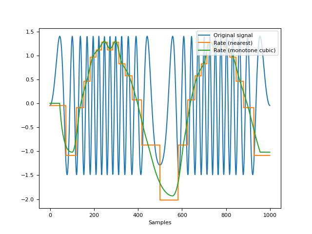In [8]: import neurokit2 as nk # Create signal of varying frequency In [9]: freq = nk.signal_simulate(2, frequency = 1) In [10]: signal = np.sin((freq).cumsum() * 0.5) # Find peaks In [11]: info = nk.signal_findpeaks(signal) # Compute rate using 2 methods In [12]: rate1 = nk.signal_rate(peaks=info["Peaks"], ....: desired_length=len(signal), ....: interpolation_method="nearest") ....: In [13]: rate2 = nk.signal_rate(peaks=info["Peaks"], ....: desired_length=len(signal), ....: interpolation_method="monotone_cubic") ....: # Visualize signal and rate on the same scale In [14]: nk.signal_plot([signal, rate1, rate2], ....: labels = ["Original signal", "Rate (nearest)", "Rate (monotone cubic)"], ....: standardize = True) ....:
{kind=link}
signal_smooth()#
- signal_smooth(signal, method='convolution', kernel='boxzen', size=10, alpha=0.1)[source]#
Signal smoothing
Signal smoothing can be achieved using either the convolution of a filter kernel with the input signal to compute the smoothed signal (Smith, 1997) or a LOESS regression.
- Parameters
signal (Union[list, np.array, pd.Series]) – The signal (i.e., a time series) in the form of a vector of values.
method (str) – Can be one of
"convolution"(default) or"loess".kernel (Union[str, np.array]) – Only used if
methodis"convolution". Type of kernel to use; if array, use directly as the kernel. Can be one of"median","boxzen","boxcar","triang","blackman","hamming","hann","bartlett","flattop","parzen","bohman","blackmanharris","nuttall","barthann","kaiser"(needs beta),"gaussian"(needs std),"general_gaussian"(needs power width),"slepian"(needs width) or"chebwin"(needs attenuation).size (int) – Only used if
methodis"convolution". Size of the kernel; ignored if kernel is an array.alpha (float) – Only used if
methodis"loess". The parameter which controls the degree of smoothing.
- Returns
array – Smoothed signal.
See also
Examples
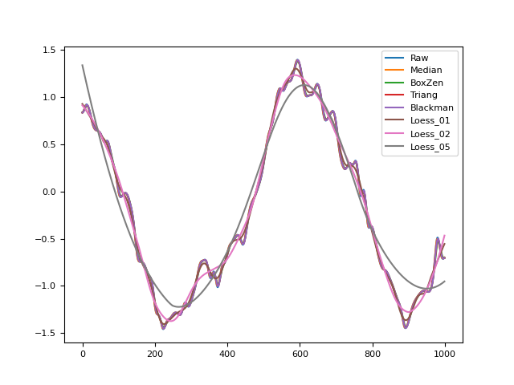In [1]: import numpy as np In [2]: import pandas as pd In [3]: import neurokit2 as nk In [4]: signal = np.cos(np.linspace(start=0, stop=10, num=1000)) In [5]: distorted = nk.signal_distort(signal, ...: noise_amplitude=[0.3, 0.2, 0.1, 0.05], ...: noise_frequency=[5, 10, 50, 100]) ...: In [6]: size = len(signal)/100 In [7]: signals = pd.DataFrame({"Raw": distorted, ...: "Median": nk.signal_smooth(distorted, kernel="median", size=size-1), ...: "BoxZen": nk.signal_smooth(distorted, kernel="boxzen", size=size), ...: "Triang": nk.signal_smooth(distorted, kernel="triang", size=size), ...: "Blackman": nk.signal_smooth(distorted, kernel="blackman", size=size), ...: "Loess_01": nk.signal_smooth(distorted, method="loess", alpha=0.1), ...: "Loess_02": nk.signal_smooth(distorted, method="loess", alpha=0.2), ...: "Loess_05": nk.signal_smooth(distorted, method="loess", alpha=0.5)}) ...: In [8]: fig = signals.plot()
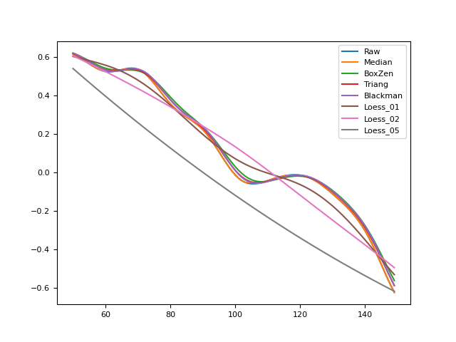# Magnify the plot In [9]: fig_magnify = signals[50:150].plot()
References
Smith, S. W. (1997). The scientist and engineer’s guide to digital signal processing.
{kind=link}
{kind=link}
signal_synchrony()#
- signal_synchrony(signal1, signal2, method='hilbert', window_size=50)[source]#
Compute the synchrony (coupling) between two signals.
Compute a continuous index of coupling between two signals either using the
"hilbert"method to get the instantaneous phase synchrony, or using rolling window correlation.The instantaneous phase synchrony measures the phase similarities between signals at each timepoint. The phase refers to the angle of the signal, calculated through the hilbert transform, when it is resonating between -pi to pi degrees. When two signals line up in phase their angular difference becomes zero.
For less clean signals, windowed correlations are widely used because of their simplicity, and can be a good a robust approximation of synchrony between two signals. The limitation is the need to select a window.
- Parameters
signal1 (Union[list, np.array, pd.Series]) – Time series in the form of a vector of values.
signal2 (Union[list, np.array, pd.Series]) – Time series in the form of a vector of values.
method (str) – The method to use. Can be one of
"hilbert"or"correlation".window_size (int) – Only used if
method='correlation'. The number of samples to use for rolling correlation.
See also
- Returns
array – A vector containing the phase of the signal, between 0 and 2*pi.
Examples
In [1]: import neurokit2 as nk In [2]: signal1 = nk.signal_simulate(duration=10, frequency=1) In [3]: signal2 = nk.signal_simulate(duration=10, frequency=1.5) In [4]: coupling_h = nk.signal_synchrony(signal1, signal2, method="hilbert") In [5]: coupling_c = nk.signal_synchrony(signal1, signal2, method="correlation", window_size=1000/2) In [6]: nk.signal_plot([signal1, signal2, coupling_h, coupling_c])

References
signal_timefrequency()#
- signal_timefrequency(signal, sampling_rate=1000, min_frequency=0.04, max_frequency=None, method='stft', window=None, window_type='hann', mode='psd', nfreqbin=None, overlap=None, analytical_signal=True, show=True)[source]#
Quantify changes of a nonstationary signal’s frequency over time The objective of time-frequency analysis is to offer a more informative description of the signal which reveals the temporal variation of its frequency contents.
There are many different Time-Frequency Representations (TFRs) available:
Linear TFRs: efficient but create tradeoff between time and frequency resolution
Short Time Fourier Transform (STFT): the time-domain signal is windowed into short segments and FT is applied to each segment, mapping the signal into the TF plane. This method assumes that the signal is quasi-stationary (stationary over the duration of the window). The width of the window is the trade-off between good time (requires short duration window) versus good frequency resolution (requires long duration windows)
Wavelet Transform (WT): similar to STFT but instead of a fixed duration window function, a varying window length by scaling the axis of the window is used. At low frequency, WT proves high spectral resolution but poor temporal resolution. On the other hand, for high frequencies, the WT provides high temporal resolution but poor spectral resolution.
Quadratic TFRs: better resolution but computationally expensive and suffers from having cross terms between multiple signal components
Wigner Ville Distribution (WVD): while providing very good resolution in time and frequency of the underlying signal structure, because of its bilinear nature, existence of negative values, the WVD has misleading TF results in the case of multi-component signals such as EEG due to the presence of cross terms and inference terms. Cross WVD terms can be reduced by using smoothing kernel functions as well as analyzing the analytic signal (instead of the original signal)
Smoothed Pseudo Wigner Ville Distribution (SPWVD): to address the problem of cross-terms suppression, SPWVD allows two independent analysis windows, one in time and the other in frequency domains.
- Parameters
signal (Union[list, np.array, pd.Series]) – The signal (i.e., a time series) in the form of a vector of values.
sampling_rate (int) – The sampling frequency of the signal (in Hz, i.e., samples/second).
method (str) – Time-Frequency decomposition method.
min_frequency (float) – The minimum frequency.
max_frequency (float) – The maximum frequency.
window (int) – Length of each segment in seconds. If
None(default), window will be automatically calculated. For"STFT" method.window_type (str) – Type of window to create, defaults to
"hann". Seescipy.signal.get_window()to see full options of windows. For"STFT" method.mode (str) – Type of return values for
"STFT" method. Can be"psd","complex"(default, equivalent to output of"STFT"with no padding or boundary extension),"magnitude","angle","phase". Defaults to"psd".nfreqbin (int, float) – Number of frequency bins. If
None(default), nfreqbin will be set to0.5*sampling_rate.overlap (int) – Number of points to overlap between segments. If
None,noverlap = nperseg // 8. Defaults toNone.analytical_signal (bool) – If
True, analytical signal instead of actual signal is used in Wigner Ville Distribution methods.show (bool) – If
True, will return two PSD plots.
- Returns
frequency (np.array) – Frequency.
time (np.array) – Time array.
stft (np.array) – Short Term Fourier Transform. Time increases across its columns and frequency increases down the rows.
Examples
In [1]: import neurokit2 as nk In [2]: sampling_rate = 100 In [3]: signal = nk.signal_simulate(100, sampling_rate, frequency=[3, 10]) # STFT Method In [4]: f, t, stft = nk.signal_timefrequency(signal, ...: sampling_rate, ...: max_frequency=20, ...: method="stft", ...: show=True) ...:
# CWTM Method In [5]: f, t, cwtm = nk.signal_timefrequency(signal, ...: sampling_rate, ...: max_frequency=20, ...: method="cwt", ...: show=True) ...:
# WVD Method In [6]: f, t, wvd = nk.signal_timefrequency(signal, ...: sampling_rate, ...: max_frequency=20, ...: method="wvd", ...: show=True) ...:
# PWVD Method In [7]: f, t, pwvd = nk.signal_timefrequency(signal, ...: sampling_rate, ...: max_frequency=20, ...: method="pwvd", ...: show=True) ...:
{kind=link}
{kind=link}
{kind=link}
{kind=link}
signal_zerocrossings()#
- signal_zerocrossings(signal, direction='both')[source]#
Locate the indices where the signal crosses zero
Note that when the signal crosses zero between two points, the first index is returned.
- Parameters
signal (Union[list, np.array, pd.Series]) – The signal (i.e., a time series) in the form of a vector of values.
direction (str) – Direction in which the signal crosses zero, can be
"positive","negative"or"both"(default).
- Returns
array – Vector containing the indices of zero crossings.
Examples
In [1]: import neurokit2 as nk In [2]: signal = nk.signal_simulate(duration=5) In [3]: zeros = nk.signal_zerocrossings(signal) In [4]: nk.events_plot(zeros, signal)
# Only upward or downward zerocrossings In [5]: up = nk.signal_zerocrossings(signal, direction="up") In [6]: down = nk.signal_zerocrossings(signal, direction="down") In [7]: nk.events_plot([up, down], signal)

{kind=link}
Any function appearing below this point is not explicitly part of the documentation and should be added. Please open an issue if there is one.
Submodule for NeuroKit.